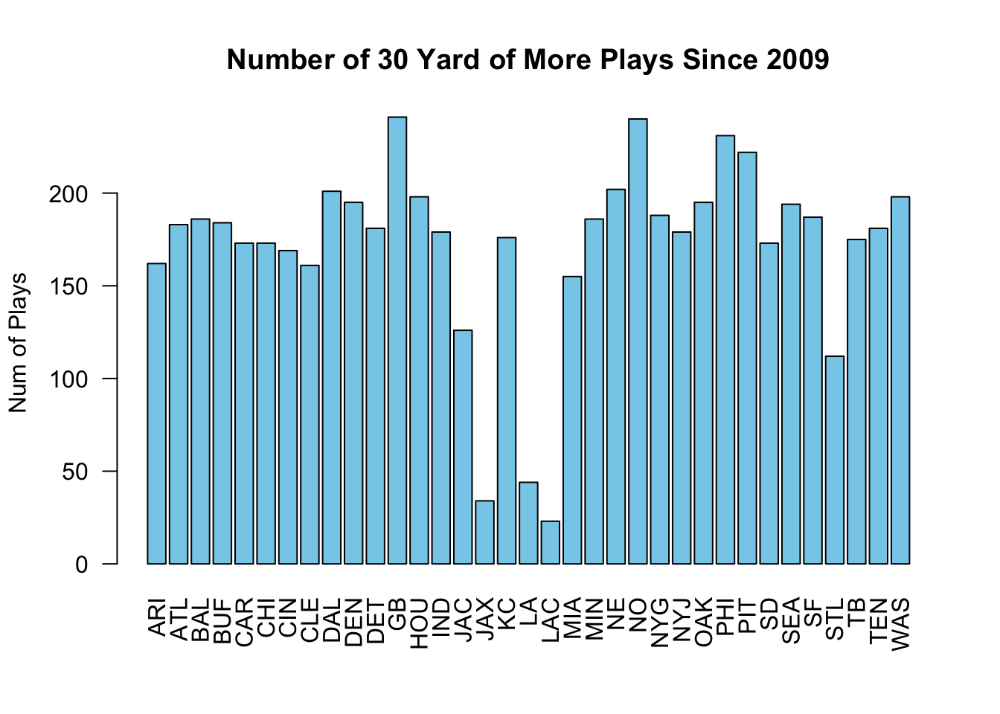

Chapter 4 Data Wrangling
4.1 What is Data Wrangling?
Usually data sets require some work to extract the answers we are looking for. This is especially true for modern data sets which can be extremely large. These techniques are called data wrangling.
In these notes we will learn how to use the R library dplyr to extract information from data sets. You can load this library in R using the command:
library(dplyr)It may print some warnings, but you don’t need to worry about these.
4.2 NA’s and the Curse of Real World Data
In real data sets we will often run into an issue where some of the data is missing. This can occur for a variety of reasons. For example, for scientific data the recorder may have messed up and not recorded that particular piece of data for some reason. If we were measuring lizard tail lengths and a lizard had lost its tail we would not have anything to record for that piece of data. In survey data the person filling out the survey may have skipped that question for some reason, etc. Yet another reason might be that a column only makes sense to answer if your answer to a previous entry takes on a particular value. If you are recording information about your employees in a spreadsheet the column child.ages only makes sense if the column has.children is true.
Whatever the reasons behind it, when you are working with real-life data you will encounter this issue. R knows about these issues and uses a special term for missing data, “NA”. Whenever a piece of data is missing from a data set it will appear as an NA in the data set.
Many ways exist for dealing with the issue of missing data. The simplest method however is to just remove the data where we are missing some component. For this we can use the na.omit function in R. This function just removes all rows in the data set where one or more of the columns is missing a value.
As an example lets consider the animal_sleep data set.
data("animal_sleep")
head(animal_sleep)## name genus vore order conservation
## 1 Cheetah Acinonyx carni Carnivora lc
## 2 Owl monkey Aotus omni Primates <NA>
## 3 Mountain beaver Aplodontia herbi Rodentia nt
## 4 Greater short-tailed shrew Blarina omni Soricomorpha lc
## 5 Cow Bos herbi Artiodactyla domesticated
## 6 Three-toed sloth Bradypus herbi Pilosa <NA>
## sleep_total sleep_rem sleep_cycle awake brainwt bodywt
## 1 12.1 NA NA 11.9 NA 50.000
## 2 17.0 1.8 NA 7.0 0.01550 0.480
## 3 14.4 2.4 NA 9.6 NA 1.350
## 4 14.9 2.3 0.1333333 9.1 0.00029 0.019
## 5 4.0 0.7 0.6666667 20.0 0.42300 600.000
## 6 14.4 2.2 0.7666667 9.6 NA 3.850Notice the missing values appear as NA’s. We can see the dimensions of the data frame using the dim command:
dim(animal_sleep)## [1] 83 11So we have data for 83 species and 11 columns of information. To remove the NA’s from this data set we can use the na.omit command:
trim_animal=na.omit(animal_sleep)
head(trim_animal)## name genus vore order conservation
## 4 Greater short-tailed shrew Blarina omni Soricomorpha lc
## 5 Cow Bos herbi Artiodactyla domesticated
## 9 Dog Canis carni Carnivora domesticated
## 12 Guinea pig Cavis herbi Rodentia domesticated
## 14 Chinchilla Chinchilla herbi Rodentia domesticated
## 17 Lesser short-tailed shrew Cryptotis omni Soricomorpha lc
## sleep_total sleep_rem sleep_cycle awake brainwt bodywt
## 4 14.9 2.3 0.1333333 9.1 0.00029 0.019
## 5 4.0 0.7 0.6666667 20.0 0.42300 600.000
## 9 10.1 2.9 0.3333333 13.9 0.07000 14.000
## 12 9.4 0.8 0.2166667 14.6 0.00550 0.728
## 14 12.5 1.5 0.1166667 11.5 0.00640 0.420
## 17 9.1 1.4 0.1500000 14.9 0.00014 0.005Notice the NA’s have disappeared. However, we have gotten rid of most of the rows:
dim(trim_animal)## [1] 20 11Next we will see how we can use the select command to avoid dropping rows that we could have kept.
4.3 Select: Pick only a few columns
Our primary data set in these notes will be the nflplays data set.
data("nflplays")This data set has data for over 275 thousands plays during NFL (football) games from 2009-2017. For each play we have recorded 43 pieces of information:
colnames(nflplays)## [1] "Date" "GameID" "Drive"
## [4] "qtr" "down" "time"
## [7] "PlayTimeDiff" "yrdline100" "ydstogo"
## [10] "ydsnet" "GoalToGo" "posteam"
## [13] "DefensiveTeam" "Yards.Gained" "sp"
## [16] "Touchdown" "Safety" "PlayType"
## [19] "Passer" "PassOutcome" "PassLength"
## [22] "AirYards" "YardsAfterCatch" "QBHit"
## [25] "PassLocation" "InterceptionThrown" "Interceptor"
## [28] "Rusher" "RunLocation" "RunGap"
## [31] "Receiver" "Reception" "Fumble"
## [34] "RecFumbTeam" "Sack" "PosTeamScore"
## [37] "DefTeamScore" "ScoreDiff" "AbsScoreDiff"
## [40] "HomeTeam" "AwayTeam" "Season"
## [43] "play.description"You will want to use the help page to look up what a column actually stores ?nflplays
For large data sets we may not be interested in all of the columns present in the data. We get only the ones we are interested in we can use the select command from dplyr. For example, if we are only interested in the Team and the Yards.Gained columns we can select those from our huge data frame:
team.offense=dplyr::select(nflplays,posteam,Yards.Gained) ##Grab just the columns posteam and Yards.Gained
head(team.offense) ##Look at the first few rows in our new data ## # A tibble: 6 × 2
## posteam Yards.Gained
## <fct> <int>
## 1 PIT 5
## 2 PIT -3
## 3 PIT 0
## 4 TEN 0
## 5 TEN 4
## 6 TEN -2You can also grab a range of columns using the select command. For example, if we want only the columns from Date to Yard.Gained in the nflplays data set we could use:
test12=select(nflplays, Date:Yards.Gained) ##get columns from Date to Yards.Gained
colnames(test12)You can put multiple selectors into your command without issue. For example, if we want the Date through Yards.Gained and the Season column you can use:
test=dplyr::select(nflplays, Date:Yards.Gained, Season) ##get columns from Date to Yards.Gained
colnames(test)## [1] "Date" "GameID" "Drive" "qtr"
## [5] "down" "time" "PlayTimeDiff" "yrdline100"
## [9] "ydstogo" "ydsnet" "GoalToGo" "posteam"
## [13] "DefensiveTeam" "Yards.Gained" "Season"A very common use of the select command is to use it in combination with the na.omit command. For example, we saw that applying the na.omit command to the whole animal_sleep data set left us with only 20 species (rows) where all 11 columns had been measured.
However, if we are only interested in a few of the columns (for example species and brainwt) it doesn’t make sense to get rid of a row just because we don’t have its diet listed as we aren’t planning to use that anyways.
The below command limits the data to what we are interested in first using the select command, and then removes any missing data.
trim_animal2=na.omit(dplyr::select(animal_sleep, name, brainwt))
head(trim_animal2)## name brainwt
## 2 Owl monkey 0.01550
## 4 Greater short-tailed shrew 0.00029
## 5 Cow 0.42300
## 9 Dog 0.07000
## 10 Roe deer 0.09820
## 11 Goat 0.11500Notice that we now have a much larger data set:
dim(trim_animal2)## [1] 56 2We will see that the select command will also be useful when chained together with our other commands.
Exercise 4.1 Create a new dataframe from the nflplays dataframe which has only the PlayType, Yards.Gained, posteam columns using the select command.
Exercise 4.2 From the nflplays data frame use the select command to grab all columns from posteam to Fumble. How many columns are left in your reduced data frame?
Exercise 4.3 Run the na.omit on animal_sleep and THEN select the name and brainwt columns. How many rows are left in this data set? Does the order of the commands matter?
4.4 Filter (select rows)
One of the most common things we want to do with a data set is pull out some of the rows. For example, in our nflplays set we might want to pull out only the rows where the play was a running play. We have seen how to do this already using the subset command. However, the more powerful library dplyr also has a function for doing this.
First, notice that the type of play is stored in the PlayType column of the data set. The below command will produce a new data frame which contains the same information as the full data set except it will now only contain rows where the PlayType is “Run”.
running=filter(nflplays, PlayType=='Run')
dim(running)## [1] 118888 43Notice that we use the double equal sign == here. We could grab all non running plays using:
tmp=filter(nflplays, PlayType!='Run') ##all plays besides running plays
dim(tmp) ##find the dimensions## [1] 156903 43For numeric columns we can also filter using the greater than >, less than <, greater than or equal to >=, or less than or equal to <= operators.
For example, if we want to look only for plays which gained more than 30 yards we could use:
bigplays=filter(nflplays, Yards.Gained>30.0)
dim(bigplays)## [1] 6007 43For we could then look at the distribution of these long plays based on the teams:
barplot(table(bigplays$posteam), las=2, main='Number of 30 Yard of More Plays Since 2009', ylab='Num of Plays', col='skyblue')
Finally, say we wanted to grab only plays run by either the Dallas Cowboys or Green Bay Packers. For this purpose R has the special word %in%. The below tests whether the posteam is in the vector we created.
dallas.gb=filter(nflplays, posteam %in% c('GB', 'DAL'))
table(dallas.gb$posteam)##
## ARI ATL BAL BUF CAR CHI CIN CLE DAL DEN DET GB HOU IND JAC JAX
## 0 0 0 0 0 0 0 0 8536 0 0 8599 0 0 0 0
## KC LA LAC MIA MIN NE NO NYG NYJ OAK PHI PIT SD SEA SF STL
## 0 0 0 0 0 0 0 0 0 0 0 0 0 0 0 0
## TB TEN WAS
## 0 0 04.4.1 Compound Criteria
4.4.1.0.1 AND
What if we want to grab rows with a more complicated criteria? For example, suppose we want to find all the running plays which were over 30 yards?
From the data set we want the PlayType column to be equal to ‘Run’, AND we want the Yards.Gained column to be greater than 30. This is easy using the filter command as we just add that condition as we did for the first one.
big.running.plays=filter(nflplays,PlayType=='Run',Yards.Gained>30.0)
dim(big.running.plays)## [1] 1090 43This makes a new data frame where we only have runs over 30 yards.
We can use the same column if we want to in our filter command. For example, the below gives plays which gained between 5 and 10 yards.
five.ten.plays=filter(nflplays,Yards.Gained>=5.0, Yards.Gained<=10.0)
##Now count up the number of pass and run plays which produced 5-10 yards
table(five.ten.plays$PlayType)##
## Pass Run
## 37255 28829Whenever we have a series of conditions where we want only those rows where all of them hold we can use the filter command with each condition listed out with commas in between.
4.4.1.0.2 OR
Now imagine we want to limit our data to just plays which happened on first or second down. The down is stored in the column down.
If we use the comma notation we are looking for plays which occurred on first and second down. This would be true for exactly zero plays.
##Wrong way!
filter(nflplays,down==1, down==2)## # A tibble: 0 × 43
## # … with 43 variables: Date <date>, GameID <int>, Drive <int>, qtr <int>,
## # down <int>, time <time>, PlayTimeDiff <int>, yrdline100 <int>,
## # ydstogo <int>, ydsnet <int>, GoalToGo <int>, posteam <fct>,
## # DefensiveTeam <fct>, Yards.Gained <int>, sp <int>, Touchdown <int>,
## # Safety <int>, PlayType <fct>, Passer <fct>, PassOutcome <fct>,
## # PassLength <fct>, AirYards <int>, YardsAfterCatch <int>, QBHit <fct>,
## # PassLocation <fct>, InterceptionThrown <fct>, Interceptor <chr>, …Clearly, we need a different approach. Instead of a comma we should use a vertical bar |.
tmp=filter(nflplays, down==1| down==2)
prop.table(table(tmp$PlayType))##
## Pass Run
## 0.5132606 0.4867394We could compare this with the percentage of the play types on third down:
tmp=filter(nflplays, down==3)
prop.table(table(tmp$PlayType))##
## Pass Run
## 0.7787376 0.2212624Clearly, a pass is much more likely on a third down.
Exercise 4.4 How many pass plays resulted in a fumble in the data set? How does this compare to the number of Run plays that resulted in a fumble? Use the filter command and the fumble column and the PlayType column.
Exercise 4.5 How many pass plays resulted in a fumble OR an interception?
Exercise 4.6 How many pass plays did the New York Giants (NYG) run on third down?
4.5 Chains/Pipes %>%
How about if we are interested in finding the yards gained on third down pass plays?
Here is a quick way to get to this information:
nflplays %>% filter(down==3, PlayType=='Pass') %>% select(Yards.Gained) %>% head(10)## # A tibble: 10 × 1
## Yards.Gained
## <int>
## 1 0
## 2 0
## 3 8
## 4 0
## 5 8
## 6 0
## 7 8
## 8 0
## 9 0
## 10 7This is our first example of the powerful chaining capability in dplyr. This is the weird notation %>% which means take the output of the last entry as the input to the next. Of course, that is a complicated way of saying we formed a chain. We start with the full data set, then filter it to just the rows which match our conditions then we select the only column we care about from that filtered data set. All of the dplyr commands can be used in a chain.
Exercise 4.7 Use a chain to find the order of animals in the animal_sleep data set from the smallest to largest brain weight (brainwt). Do this all in one command.
4.6 Grouping Data Together
Our nfl plays data set is based around recording data for each individual play. However, we might be more interested in grouping things by the player, team, league, play-type, etc.
For example, lets try and find the average yards gained per play for each team:
nflplays %>% group_by(posteam) %>% summarize(av.yds.gained=mean(Yards.Gained))## # A tibble: 36 × 2
## posteam av.yds.gained
## <fct> <dbl>
## 1 ARI 5.77
## 2 ATL 6.12
## 3 BAL 5.65
## 4 BUF 5.71
## 5 CAR 5.90
## 6 CHI 5.84
## 7 CIN 5.73
## 8 CLE 5.44
## 9 DAL 6.34
## 10 DEN 5.99
## # … with 26 more rowsLet’s unpack what this command does. It first groups the plays by the posteam column meaning grouped by the team with the ball. The group_by command is not terribly useful by itself, you will just about always want to use it in combination with the summarize command. The summarize command is used to create a summary of the data after it has been grouped in some way. It will create new summary columns in a new data frame. In this case we compute the mean of the Yards.Gained column.
Typically, we will want to group our data using a categorical column(s) in the data set.
We can extend this basic command in many different ways. For example, we can group our data using more than one categorical variable. The below command finds the average yards gained for each team and season.
nflplays %>%
group_by(posteam, Season) %>%
summarize(av.yards.gained=mean(Yards.Gained))## # A tibble: 297 × 3
## # Groups: posteam [36]
## posteam Season av.yards.gained
## <fct> <fct> <dbl>
## 1 ARI 2009 6.07
## 2 ARI 2010 5.21
## 3 ARI 2011 6.05
## 4 ARI 2012 4.78
## 5 ARI 2013 5.94
## 6 ARI 2014 5.55
## 7 ARI 2015 6.88
## 8 ARI 2016 5.96
## 9 ARI 2017 5.47
## 10 ATL 2009 5.54
## # … with 287 more rowsNow we can see the average yards gained for each team and season from the results.
In addition we could also calculate more columns in our summary. For example, in the below we find the mean yards gained, the median yards gained and the standard deviation.
nflplays %>% group_by(posteam, Season) %>%
summarize(av.yards.gained=mean(Yards.Gained), median.yds.gained=median(Yards.Gained), sd.yds.gained=sd(Yards.Gained))## # A tibble: 297 × 5
## # Groups: posteam [36]
## posteam Season av.yards.gained median.yds.gained sd.yds.gained
## <fct> <fct> <dbl> <dbl> <dbl>
## 1 ARI 2009 6.07 4 7.49
## 2 ARI 2010 5.21 2 8.19
## 3 ARI 2011 6.05 3 9.48
## 4 ARI 2012 4.78 2 7.26
## 5 ARI 2013 5.94 3 8.94
## 6 ARI 2014 5.55 2 9.01
## 7 ARI 2015 6.88 4 9.74
## 8 ARI 2016 5.96 3 8.45
## 9 ARI 2017 5.47 3 7.56
## 10 ATL 2009 5.54 3 7.67
## # … with 287 more rowsThe names you choose in the summarize command are up to you. Just name them something you will be able to remember for later. We can use any of our summary statistics commands learned in the EDA notes to find a summary of our grouped data.
Sometimes you might want to just find the number of entries as well. For this we can use the n() function. This just counts up the number of entries in each group. The below adds a column which gives the number of plays.
nflplays %>% group_by(posteam, Season) %>%
summarize(av.yards.gained=mean(Yards.Gained), number.of.plays=n())## # A tibble: 297 × 4
## # Groups: posteam [36]
## posteam Season av.yards.gained number.of.plays
## <fct> <fct> <dbl> <int>
## 1 ARI 2009 6.07 921
## 2 ARI 2010 5.21 863
## 3 ARI 2011 6.05 913
## 4 ARI 2012 4.78 941
## 5 ARI 2013 5.94 958
## 6 ARI 2014 5.55 943
## 7 ARI 2015 6.88 961
## 8 ARI 2016 5.96 1026
## 9 ARI 2017 5.47 980
## 10 ATL 2009 5.54 981
## # … with 287 more rowsAlso, it is sometimes useful to add up a column for each group. We can do this with the sum() command in R. Let’s add a column to our data which has the total yards gained for each season/team.
nflplays %>% group_by(posteam, Season) %>%
summarize(av.yards.gained=mean(Yards.Gained), number.of.plays=n(), total.yards=sum(Yards.Gained))## # A tibble: 297 × 5
## # Groups: posteam [36]
## posteam Season av.yards.gained number.of.plays total.yards
## <fct> <fct> <dbl> <int> <int>
## 1 ARI 2009 6.07 921 5587
## 2 ARI 2010 5.21 863 4495
## 3 ARI 2011 6.05 913 5526
## 4 ARI 2012 4.78 941 4495
## 5 ARI 2013 5.94 958 5688
## 6 ARI 2014 5.55 943 5233
## 7 ARI 2015 6.88 961 6610
## 8 ARI 2016 5.96 1026 6115
## 9 ARI 2017 5.47 980 5364
## 10 ATL 2009 5.54 981 5431
## # … with 287 more rows4.6.0.1 Example 1
Lets find the number of plays which were pass plays for each team in the NFL.
First we want to filter to keep only rows which correspond to a pass play. Then we will group these by the teams and summarize by counting up the number of pass plays.
nflplays %>% filter(PlayType=='Pass') %>%
group_by(posteam) %>%
summarize(num.pass.plays=n()) ## # A tibble: 36 × 2
## posteam num.pass.plays
## <fct> <int>
## 1 ARI 5169
## 2 ATL 5244
## 3 BAL 5115
## 4 BUF 4477
## 5 CAR 4455
## 6 CHI 4661
## 7 CIN 4730
## 8 CLE 4900
## 9 DAL 4852
## 10 DEN 5110
## # … with 26 more rows4.6.0.2 Example 2
Lets find the average yards per rush attempt grouped by the player attempting the rush. Now we are grouping by the categorical variable Rusher instead of the team.
nflplays %>% filter(PlayType=='Run') %>%
group_by(Rusher) %>%
summarise(av.yards.per.carry=mean(Yards.Gained))## # A tibble: 1,205 × 2
## Rusher av.yards.per.carry
## <fct> <dbl>
## 1 A. Bradshaw -5
## 2 A.Abdullah 3.88
## 3 A.Allen 4.10
## 4 A.Andrews 3.61
## 5 A.Armstrong 9.5
## 6 A.Bailey 1
## 7 A.Barbre 15
## 8 A.Benn 2.93
## 9 A.Blue 3.59
## 10 A.Boldin 4
## # … with 1,195 more rowsEven this summary data set is rather large so we might want to refine it some more. It has some strange points because some of the players only carried the ball a few times. Let’s get rid of the players that carried the ball less than 200 times.
nflplays %>% filter(PlayType=='Run') %>%
group_by(Rusher) %>%
summarise(av.yards.per.carry=mean(Yards.Gained), num.carries=n()) %>%
filter(num.carries>=200)## # A tibble: 159 × 3
## Rusher av.yards.per.carry num.carries
## <fct> <dbl> <int>
## 1 A.Abdullah 3.88 317
## 2 A.Blue 3.59 514
## 3 A.Bradshaw 4.43 977
## 4 A.Brown 4.12 288
## 5 A.Collins 4.54 237
## 6 A.Dalton 4.61 244
## 7 A.Dixon 3.48 268
## 8 A.Ellington 4.12 410
## 9 A.Foster 4.36 1460
## 10 A.Luck 7.18 203
## # … with 149 more rowsWe might want to sort this data to put it in some order based on the average yards per carry. We can do this with the arrange() command from dplyr.
nflplays %>% filter(PlayType=='Run') %>%
group_by(Rusher) %>%
summarise(av.yards.per.carry=mean(Yards.Gained), num.carries=n()) %>%
filter(num.carries>=200) %>% arrange(av.yards.per.carry)## # A tibble: 159 × 3
## Rusher av.yards.per.carry num.carries
## <fct> <dbl> <int>
## 1 <NA> 2.28 388
## 2 C.Taylor 2.92 219
## 3 J.Kuhn 3.08 206
## 4 S.Draughn 3.11 221
## 5 K.Davis 3.27 244
## 6 A.Williams 3.30 328
## 7 J.Best 3.30 247
## 8 M.Bell 3.35 213
## 9 T.Riddick 3.39 239
## 10 T.Mason 3.40 248
## # … with 149 more rowsTo use the arrange command you just give it the column (numerical generally) that you want to use to sort the data. By default it will sort the data into ascending order (small to big). If we want to reverse that (big to small) we can use the desc() command.
nflplays %>% filter(PlayType=='Run') %>% group_by(Rusher) %>%
summarise(av.yards.per.carry=mean(Yards.Gained), num.carries=n()) %>%
filter(num.carries>=500) %>% arrange(desc(av.yards.per.carry))## # A tibble: 70 × 3
## Rusher av.yards.per.carry num.carries
## <fct> <dbl> <int>
## 1 C.Newton 5.94 740
## 2 J.Charles 5.26 1309
## 3 C.Spiller 4.97 694
## 4 E.Elliott 4.69 550
## 5 J.Forsett 4.68 809
## 6 A.Peterson 4.68 1952
## 7 D.Sproles 4.67 576
## 8 M.Ingram 4.57 1155
## 9 L.McCoy 4.54 2135
## 10 F.Jones 4.5 578
## # … with 60 more rowsExercise 4.8 Find the average yards gained for Run plays grouped by the team. You will need to add a filter command to the chain.
Exercise 4.9 Find average yards gained for Pass plays grouped by the Passer. Eliminate those Passers who threw less than 300 passes and find the top ten passers
4.7 Homework
4.7.1 Concept Questions
- Explain what the
dplyrcommandsselect,filter,group_by,summarize, andarrangedo. - (True/False) The na.omit command is used to remove all rows from a data frame which have any columns missing.
- (True/False) The order we apply the select command and na.omit can change the results
- (True/False) The
group_bycommand is used to create groups of rows based on a categorical variable - (True/False) The arrange command reorders the rows of the data using a given column from small to large (by default)
- (True/False) The
group_bycommand should always be paired thesummarizecommand. Thegroup_bycommand doesn’t really change anything by itself. - (True/False) The
dplyrpackage is awesome. This topic is so awesome you just can’t stop computing things. - (True/False) The first step in looking for a relationship between two categorical variables is to make a contingency table using the
tablecommand.
4.7.2 Practice Problems
Load the
flightNYCFulldata. This data has data for over 300,000 flights departing from NYC in 2013.- Filter this data to contain only flights which came from the carriers AA or UA (american or united airlines).
- Filter this data to contain only flights from carrier ‘US’ and origin=‘JFK’
- Find the average departure delays for the carrier ‘US’ with origin=‘JFK’
Load the
BirdCaptureData. This data set contains over 14000 recordings of captured birds at a bird station in California. Besides other information it contains the day of the year each bird was captured (JulianDay), the species code of the birdSpeciesCodeand theSeason(either Fall or Spring). The species in this study are migratory, so they are passing through when they are captured. Find the median capture day for each species in the two seasons.Load the
BirdCaptureData. Make the appropriate plot to look for a relationship between theSeasoncolumn and theSpeciesCode. Find the percentages of the birds captured for each species in the two seasons. Is this roughly the same for all the bird species?
4.7.2.1 Advanced Problems
- Load the Young_People_Survey data, and look familiarize yourself with the data set using `?Young_People_Survey. Find the average weight (the Weight column) of grouped by they participants answer to the “Healthy Eating”” column. Make a barplot of this result.
Hint: You will need to remove the missing values NA from the data set using the na.omit command. This will drop all rows which are missing values in any column in the data set.
So your answer will start with:
Young_People_Survey %>% select(`Healthy eating`, Weight) %>% na.omit() Load the demographic_data data set. This has demographic information for over 11,000 cities in the US. Find the average of the debt.proportion column for each state in the data set. What state has the smallest average debt proportion?
Load the wine_tasting data set. What country has the most number of wines which are priced above 100 dollars?
Load the
shot_logs_2014data set. Notice you can find the percentage of shots are made for the whole data set using the commandmean(shot_logs_2014$FGM). This is because theFGMcolumn has a 1 if the shot was made and a zero if it was missed. The team playing defense on a given shot is stored in theTeam.Defendingcolumn of the data set. Group this data by the team defending and find the allowed field goal percentage. Sort this data from smallest to largest. What team allowed the smallest of percentage of made baskets (best defense)?Load the
HR_Employee_Attritiondata set. Each row contains information about one individual at a company. Group the employees by theDepartmentand find the average and sd of theDailyRatefor each department.Load the
flightNYCFulldata set.- Find the mean and median departure delay for each of the carriers.
- Now group the data using both the carrier and the origin and find the median departure delays. Arrange the data from the smallest median delay to the largest.